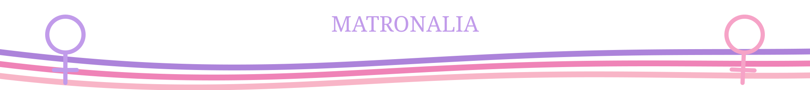
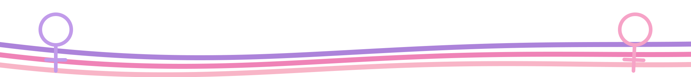
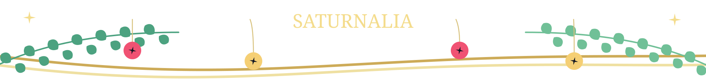

← Return to the displayAnnual events calendar
Seasonal borders change automatically during the inclusive display windows below, using the Europe/London date. Modern observances use artwork without an overlaid caption. Ancient festival names are part of their colour-matched artwork, with a brief explanation above the main content. All eighteen treatments use moving graphics; the previews below show their static fallbacks. The notes here provide the background and sources.
Easter follows the Western Gregorian calculation. Remembrance ends on the Sunday of the week containing 11 November and takes precedence during its window. Other overlapping graphics alternate between screens and loops.
Display windows are editorial choices. Roman dates are conventional month-and-day anniversaries in the modern calendar. Ancient practice varied. Organiser-set campaign weeks and UK World Book Day use confirmed dates for the years listed. Later dates need checking when announced. Fixed annual dates and Easter continue automatically.
Calendar sources were checked on 7 November 2026. Full sources and image credits.
Roman calendar
The Kalends of January
Display window 1–7 January
Observance 1 January
A new year begins. The Kalends marked the first day of each Roman month.
University of Chicago · Roman calendar
Modern observance
LGBT+ History Month
Display window Throughout February
Observance February in the UK
The UK’s annual February celebration of LGBT+ history.
Schools OUT · UK LGBT+ History Month
Modern observance
Children’s Mental Health Week
Display window 1–7 February 2027 · later dates await confirmation
Observance 1–7 February 2027
Place2Be’s annual week highlighting children’s and young people’s mental health.
Place2Be · Children’s Mental Health Week
Roman festival
Lupercalia
Display window 12–16 February
Observance 15 February
A Roman February festival with rites of purification. What can festivals tell us about a city’s concerns?
University of Chicago · Roman calendar
Roman festival
Matronalia
Display window 1–5 March
Observance 1 March
A festival associated with Juno and married women. Whose experiences survive in our accounts of ancient Rome?
University of Chicago · Roman calendar

Modern observance
World Book Day
Display window 1–7 March 2027 · later dates await confirmation
Observance 4 March 2027 in the UK
A celebration of reading for pleasure, using the UK campaign’s confirmed date.
World Book Day · 2027 dates
Modern observance
International Women’s Day
Display window 6–12 March
Observance 8 March
Whose voices do we hear? Explore women’s writing, scholarship and lives across the ancient world and its reception.
United Nations · International Women’s Day

Modern observance
World Poetry Day
Display window 19–25 March
Observance 21 March
UNESCO’s annual celebration of poetry and linguistic expression.
UNESCO · World Poetry Day
Christian festival
Easter
Display window Palm Sunday to the Sunday after Easter
Observance Western Easter Sunday · date varies
A season of hope and renewal. The date of Western Easter moves each year within the Gregorian calendar.
US Naval Observatory · date of Easter
Roman festival
Parilia · Rome’s birthday
Display window 18–24 April
Observance 21 April
A shepherds’ festival also marked Rome’s traditional birthday. How does a city tell the story of its beginnings?
University of Chicago · Roman calendar
Modern observance
Earth Day
Display window 20–26 April
Observance 22 April
The annual day focused on the environment and care for the planet.
EARTHDAY.ORG · annual observance
Roman festival
Floralia
Display window 28 April–3 May
Observance 28 April–3 May
Flowers and performance marked the festival of Flora. Roman religious life made room for colour and spectacle.
University of Chicago · Floralia
Roman festival
Lemuria
Display window 9–13 May
Observance 9, 11 and 13 May
Household rituals addressed restless spirits. How did Romans understand their responsibilities towards the dead?
LacusCurtius · Lemuria
Modern observance
Mental Health Awareness Week
Display window 11–17 May 2026 · 10–16 May 2027 · later dates await confirmation
Observance Organiser-set week each May
The UK awareness week led by the Mental Health Foundation, using confirmed campaign dates.
Mental Health Foundation · confirmed campaign dates
Modern observance
Pride Month
Display window 1–30 June
Observance June
Belonging and the freedom to be yourself. Explore love and identity in ancient texts, with care for their different contexts.
Library of Congress · Pride Month
Roman festival
Vestalia
Display window 7–15 June
Observance 7–15 June
Vesta’s festival focused on the sacred hearth. What makes a place feel like home?
LacusCurtius · Vestalia
Roman festival
Neptunalia
Display window 20–26 July
Observance Traditionally 23 July
A midsummer festival for Neptune. Branch shelters offered shade as Romans gathered in the summer heat.
LacusCurtius · Neptunalia
Roman festival
Vulcanalia
Display window 20–26 August
Observance 23 August
A festival for Vulcan, god of fire. A reminder of both the power and the dangers of fire in an ancient city.
LacusCurtius · Vulcanalia
Roman games
Ludi Romani
Display window 4–19 September
Observance 4–19 September in the late Republic
Public games honoured Jupiter. Performance and spectacle brought Roman crowds together.
LacusCurtius · Roman games calendar note 41
Modern observance
Black History Month
Display window 1–31 October
Observance October in the UK
Explore Black history and the people shaping Classics today. Ask whose work is recognised and whose stories need closer attention.
Black History Month · British origins
Modern observance
Bonfire Night
Display window 1–5 November
Observance 5 November
Fireworks light the November sky. Bonfire Night recalls the Gunpowder Plot of 1605.
English Heritage · Bonfire Night
Modern commemoration
Remembrance
Display window 6 November to the Sunday ending the week containing 11 November
Observance Armistice Day 11 November · Remembrance Sunday varies
Remembering those who served and those whose lives were changed by war. A time for reflection, gratitude and peace.
Royal British Legion · Remembrance
Modern observance
Anti-Bullying Week
Display window 16–22 November 2026 · later dates await confirmation
Observance 16–20 November 2026
The UK campaign week, with its graphic retained through the following weekend.
Anti-Bullying Alliance · confirmed 2026 dates
Seasonal connection
Christmas and Saturnalia
Display window 1–31 December
Observance Christmas 25 December · Saturnalia from 17 December
Gifts, light and gatherings. Rome’s Saturnalia began on 17 December and later extended to 23 December.
English Heritage · Saturnalia
